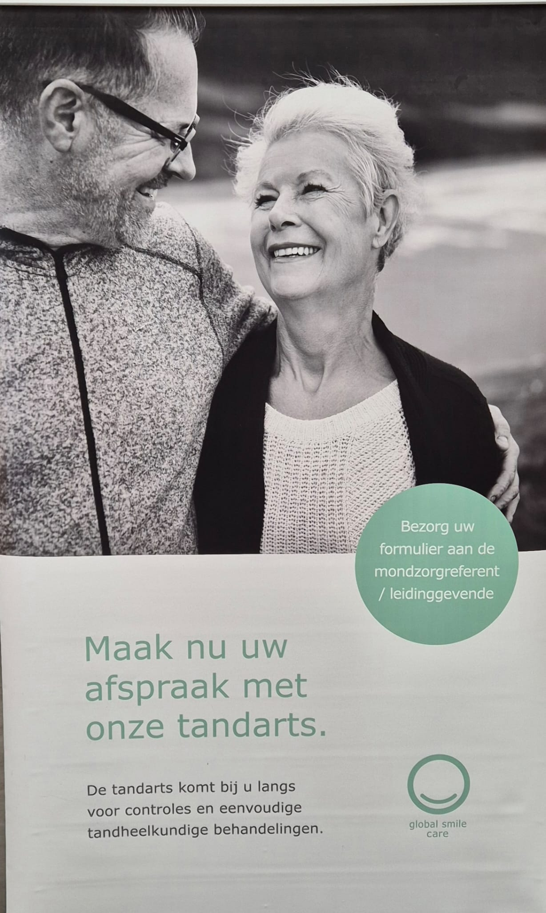

At the dental practice
Global Smile Care receives patients at Tolstraat 40 in Antwerp-Zuid for appointments and practice-based dental care.
Explore the practiceAbout Global Smile Care
Global Smile Care welcomes patients at its practice in Antwerp-Zuid and brings a mobile dental team to residential care centres.
Make dental attention easier to reach, in the setting that fits the patient.
Global Smile Care · AntwerpTwo settings
The care-centre service is part of Global Smile Care's wider dental practice. The same organisation provides care at its Antwerp address and ambulant dentistry in residential care centres.
Global Smile Care receives patients at Tolstraat 40 in Antwerp-Zuid for appointments and practice-based dental care.
Explore the practiceAn experienced team of dentists and assistants visits care centres for examinations and suitable straightforward treatment.
See how visits work
The people who visit
Global Smile Care describes its ambulant service as a team of experienced dentists and assistants. For a care-centre visit, they work with the people who understand each resident's routine and the centre's day.
Carry out the agreed examinations and suitable dental treatment.
Support the dental team and the practical flow of the visit.
Coordinate residents and help the visit fit familiar routines.
The Antwerp practice
Global Smile Care is based in Antwerp-Zuid. Care-centre teams can contact the practice directly to arrange an introductory conversation about ambulant dental care.
Care at your centre
Tell the Global Smile Care team about your centre, residents, and practical questions.